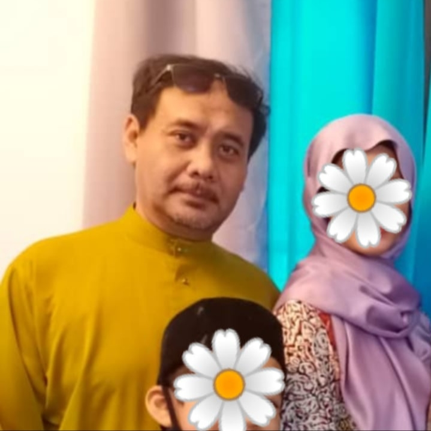
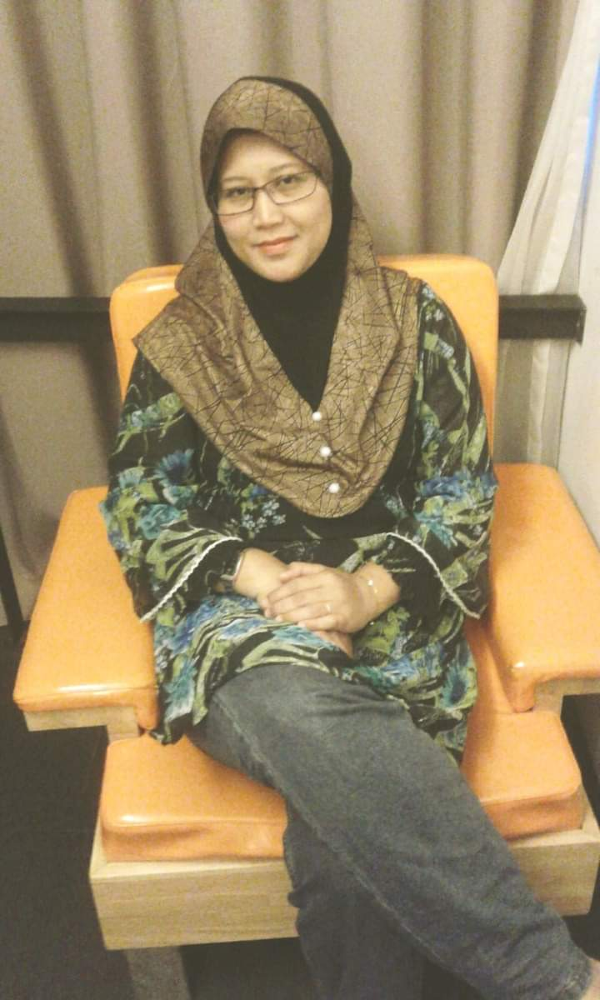
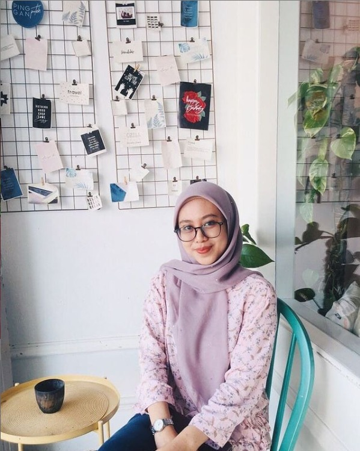
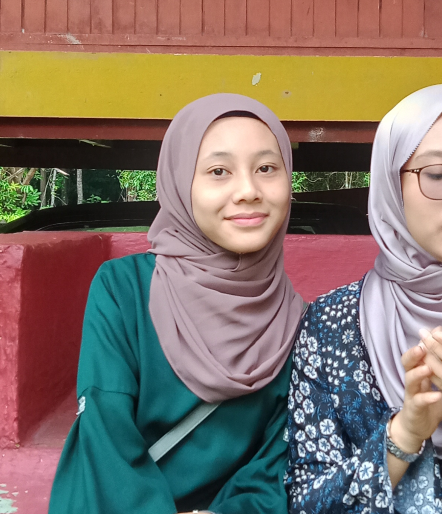
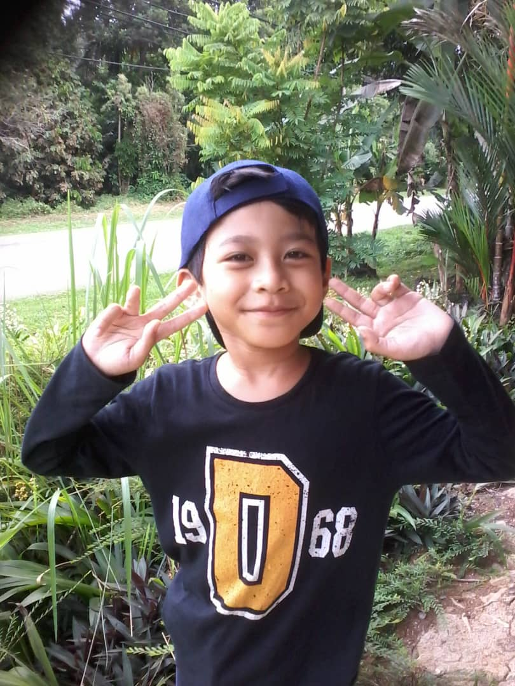
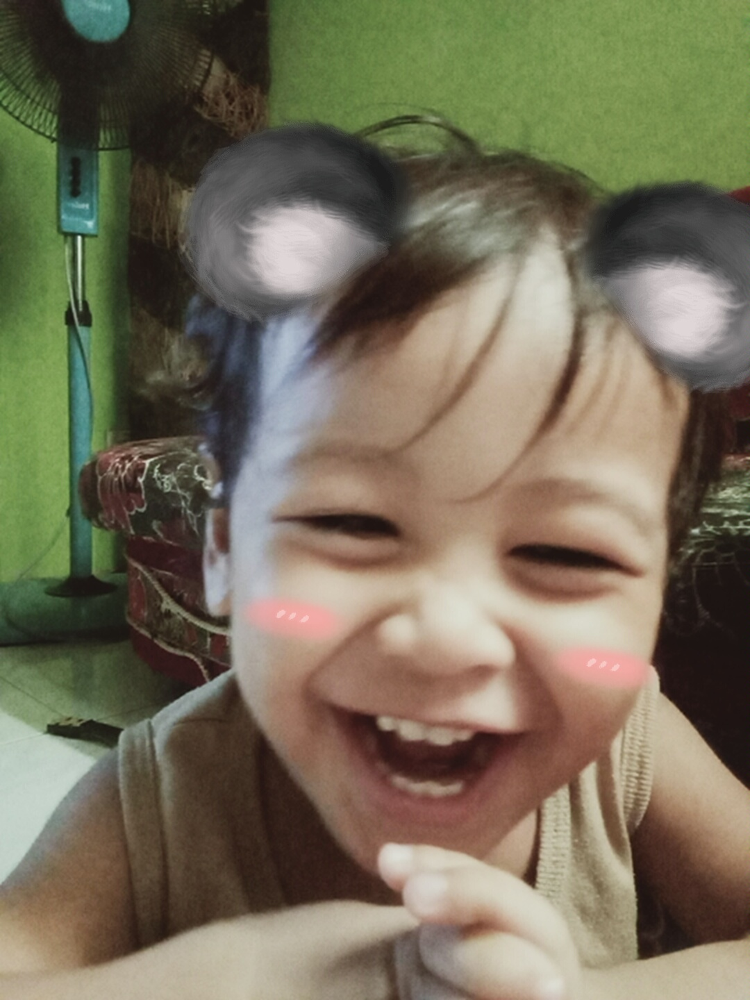

FATHER
MISARIFIN BIN AMIN

My dad was born on 12th March 1970 at Kampung Pulau Meranti, Puchong, Selangor. He is currently 50 years old this year. My father got married when he was 26.
His parents are from Muar, Johor and moved to Selangor because of work. He is the youngest out of 6 siblings. He has 2 brothers and 3 sisters and they are mostly
stay in Puchong as well and one of them stays in Segamat, Johor. My dad went to Sekolah Kebangsaan Pulau Meranti, Sekolah Menengah Batu 14, Sekolah Menengah La Salle and did his
Sijil Tinggi Pelajaran Malaysia (STPM) at Sekolah Menengah Seri Mahkota, Kuantan, Pahang. My father owns a business in which it is related to a Mechanical Engineering
Services. He had various type of works before he started the business. He once worked as a reporter for one of the newspaper agency and also worked as a Logistic Executive at Artwright Malaysia.
He started his business in 2002 and it went well where my dad bought a car and house for us (which is our current house now). My dad loves to play badminton and i think it is his favourite sport.
He will go play badminton with his friends on every saturday. He is a hard working dad which never fails to feed us and provide everything for us.
|
Mother
IDAROYANI BINTI ISMAIL

My mom was born on 5th March 1974 at Kampung Sungai Penchala, Kuala Lumpur. She is currently 46 years old this year. My mom got married when she was 22.
They met at work where at that time they worked in the same office. My mom relatives are mostly in Kuala Lumpur and there are also some of them in Singapore.
Her parents were both raised in Kampung Sungai Penchala as well. My mom is the oldest out of her 4 siblings. She has one sister and 2 brothers. She went to Sekolah Kebangsaan Sungai Pechala and Sekolah
Menengah Taman Tun Dr. Ismail, Kuala Lumpur. She is currently a full time housewife where she stopped working after my younger sister was born. My mom is a good cooker.
This because, she is very good at almost everything (ofcourse, she's my mom!). Her Nasi Tomato Ayam Masak Merah is just everything. It is one of my favouries! Besides that, my mom also very good at baking.
Her chocolate cake never fails us. My mom even take order if requested. Also, lately she is into currypuff. In which, she takes order from people and sell it. Sometimes, she recieved order for around 200pcs of currypuffs a day.
This has proven that her currypuff never disappoint people.
|
Older Sister
FARHANA IZZANI BINTI MISARIFIN

My sister was born on 8th April 1997 at Hospital Universiti, Kuala Lumpur. She is currently 23 years old this year. She is the oldest
in the siblings. She went to Sekolah Kebangsaan Taman Putra Perdana and took her Sijil Pelajaran Malaysia (SPM) at Sekolah Menengah Kebangsaan Putra Perdana.
She once took a taekwondo lesson during her primary school and recieved second grade brown. But she stopped halfway because of Ujian Penilaian Sekolah Rendah (UPSR) at that time.
Same as me, she also went to Program Latihan Khidmat Negara (PLKN) after SPM at Kem Pelangi Hill Resort, Kuala Kubu Bharu, Selangor. Since, we are only 3 years
apart, we almost share everything together such as scarves, clothes and so forth. And, I can say that she is someone that I can rely on. We both love Kdramas so much and I will be the one that recommend everything to her.
Besides that, we also love Korean variety show 'Running Man' where we will watch it together whenever the new episode came out. She is also into cooking recently and her Butter Chicken is supprisingly
delicious (lol). During the Movement Control Order (MCO) we tried to do the viral coffee which is Dalgona Coffee but it failed. It was one of the funniest things happen this year (HAHAHA).
So, currently she is in her last semester for Degree in Electrical Engineering at UiTM Shah Alam. She did her Diploma at UiTM Dungun, Terengganu in 2015 - 2018. She once got GPA of 3.96 in her
degree semester thus that really made me want to do better as she is.
|
Younger Sister
FAZRENA IZWANI BINTI MISARIFIN

My sister was born on 10th February 2006 at Hospital Putrajaya, Wilayah Persekutuan Putrajaya. She is currently 14 years old this year. She is the third
in the siblings. She went to Sekolah Kebangsaan Taman Putra Perdana and currently in her Form 2 at Sekolah Menengah Kebangsaan Putra Perdana.
She has a nickname where everyone in the family called her 'Ajin' which I have no idea where it is come from. Her hobby is watching Kdramas.
Since MCO, I think she has spent most of the days on laptop watching Kdramas. She also likes to cook. She always share recipes that she got from internet
and ask us to help her. Well all I can say, do not trust internet too much. This because, most of the recipes we followed were failed (HAHAHA). Besides watching Kdramas,
she is also like to read novels. In which most of the novel in this house are hers. Also, she take care of her skin really well where she never missed her skincare routine
every day. Apart from that, she will be sitting for Pentaksiran Tingkatan 3 (PT3) next year. So, we hope that she can do it well.
|
Younger Brother
MUHAMMAD ALIFF IZ'AAN BINTI MISARIFIN

My brother was born on 17th September 2010 at Hospital Putrajaya, Wilayah Persekutuan Putrajaya. He is 10 years old thsi year. He is the forth in the siblings. He is currently
currently in primary school at Sekolah Kebangsaan Taman Putra Perdana. His hobby is playing mobile games and even getting scold by my mom because he plays so much and didn't do his homework.
He likes beta fish so much. He has three Beta Fish. I remember he asked for Beta Fish on his birthday. Besides Beta Fish, he also owns a Syrian hamster. But I am the one who clean it up.
Aliff is the only boy I know who does not know how to play football and I guess because our neighborhood do not have many friends around his age. So that is why he is always on his tablet playing games.
Also, he loves pizza so much. He could eat up to 6 slices just for himself. Besides that, Aliff also loves to draw and he is really good at it. He likes to draw anime, doodles and other cartoon characters.
I can say that Aliff is Aryan's bestfriend because Aryan will go to his brother whenever he cry.
|
Little Brother
MUHAMMAD ARYAN IMAN BINTI MISARIFIN

Aryan was born on 30th September 2018 at Hospital Serdang, Selangor. He is just turned 2 this year. He is the youngest in the siblings. Aryan really have a big age gap with us. For example, Aryan and me are 18
years apart. Aryan loves fruits so much, he will get excited whenever my parents bring fruits home. He also play so much with his toys. He loves dinosaurs! He have many kind of Dinosaurs. On his 2nd birthday,
my sister bought him a big dinosaur and it does not last a day because Aryan accidently broke its neck where he dropped it on the floor. Aryan is so cute, I love to hear his 'alien language' whenever he talk to us.
He is in a learning process where we can see how he catch some words while watching his Youtube videos. We encourage him to watch Youtube videos because it is one of the learning process. However, we do limit the
time since it is not good for his eyes if he watch it too much. Aryan also is a brave boy. He never get scared to touch anything he sees for the first time where usually he get excited instead.
|